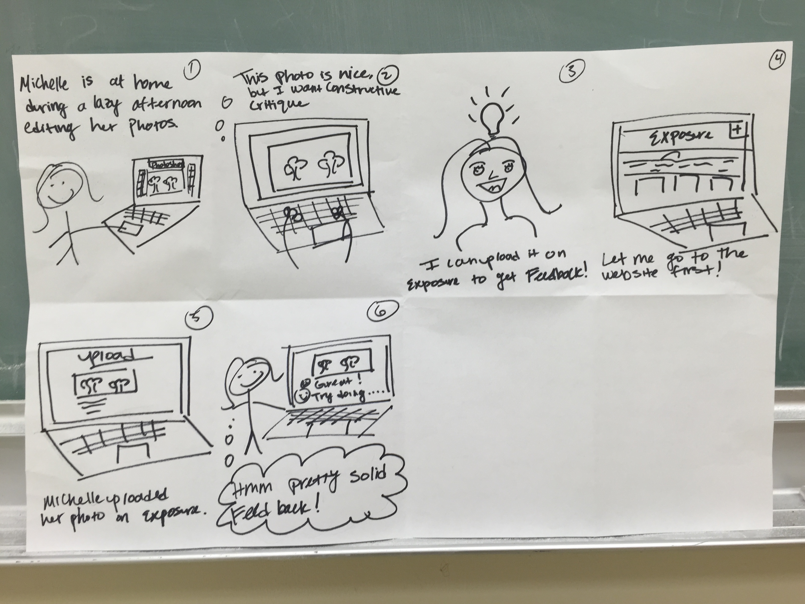
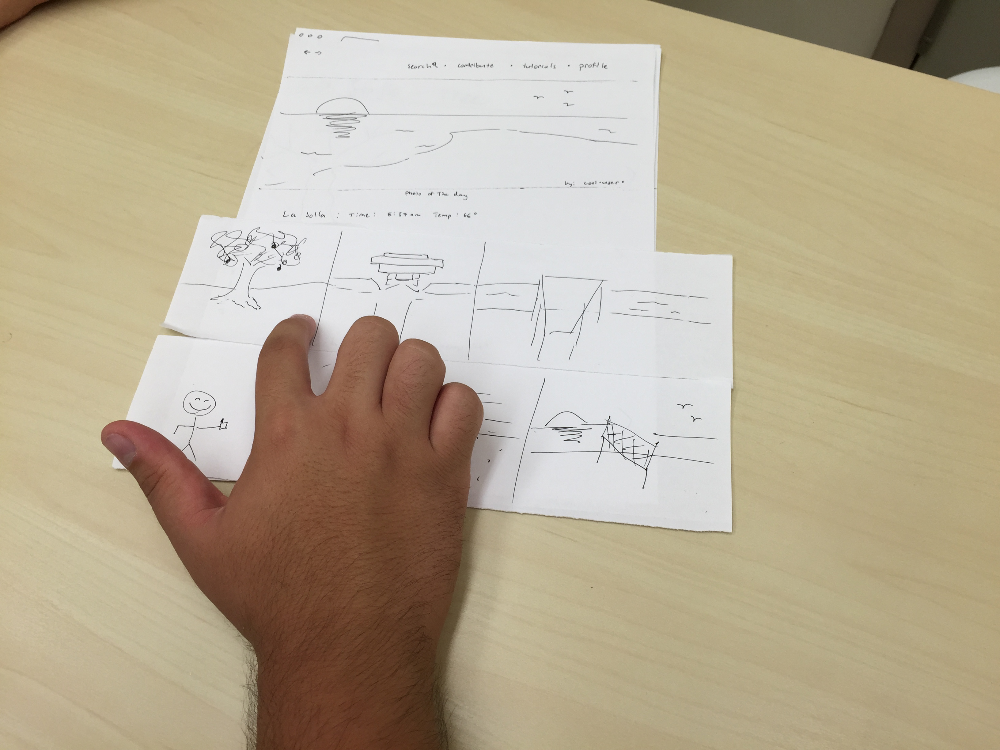
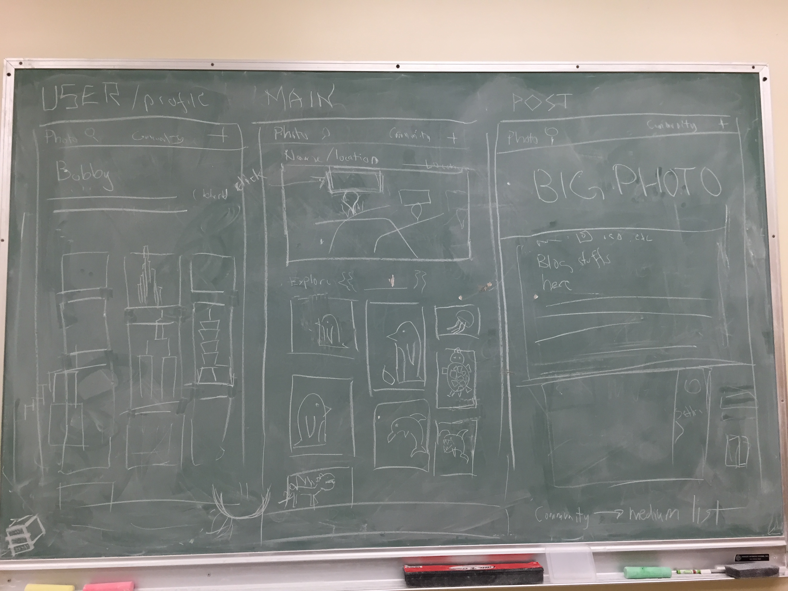

Portfolio
Kolibri

UCSD Eats

About
Hi, I'm glad you found me! I am a 22 year old UX/UI designer born and raised in San Diego, California. Aside from chasing sunsets and rooftop adventures, I strive to create beautiful interfaces.
If you're looking to convey your story in a inspiring and graceful manner, you've found the right gal! Say hello, I'd love to hear from you!
Contact Me
Kolibri
About
Kolibri is a free open-source software that runs on low-cost hardware. Kolibri provides educational content to learners in offline and low-bandwidth contexts.
I am of the two UX/UI designers involved in creating the Kolibri landing page to showcase its features. I prototyped using multiple softwares which include Axure, Adobe Illustrator, and Adobe Photoshop.
Through this entire process, I learned the value of truly understanding how the user would perceive the landing page in order to effectively display the content information. The Kolibri landing page has been iterated three times so far. With each iteration, I learned how I can better focus our mission statement while conveying crucial information that matters most to our users.
Iteration 1

When first designing Kolibri, I focused on getting the necessary information on the page. One of the main features of Kolibri is that it has the ability to operate offline through our unique sync and sharing function. This is one example of the design decisions made. I wanted to keep the page as simple as possible and lay out the information in a concise manner.
Iteration 2

After getting feedback from potential curators and fellow collegues, I decided to take a more metaphorical and interactive approach. I came up with the puzzle theme since Kolibri is essentially the missing puzzle piece that closes the learning divide. The prototype demonstrates how the Kolibri page would look like with scrolling parallax. As the user scrolls, the puzzle pieces that explain the features will appear side by side and thus, finishing the puzzle.
Iteration 3

The third iteration is still a work in progress since Kolibri is in this first stages of implementation. After hearing more feedback, my partner and I wanted to create an emotional connection between the the software and the user. We still kept the puzzle theme, but we dedicated more space to the features section to emphasize the aspects of Kolibri that make it so unique.
UCSD Eats
About
Food is an important aspect of everyone’s lives. As Hippocrates once said, “Let food be thy medicine and medicine be thy food”. However, with so many options for what types of food and places to eat, food can often become stressful when trying to make the important decision for what to eat next. This problem is especially apparent at the University of California, San Diego, where there are 10 dining halls along with several private and independently-owned eateries for students to enjoy. The UCSD Triton App tries to help solve this issue by providing an interactive tool for students to see information about what’s on the menu and dietary facts. However, many students do not rely on this application since the menus are not often updated and they do not provide any insight for what is worth the buy. Therefore, in order to improve the user experience of choosing where to eat at the UCSD campus, we intend to redesign the dining sector of the UCSD Triton App to include student reviews. In order to create this application, we followed the methods of the Contextual Design process closely as described by the Contextual Design: Evolved textbook by Karen Holtzblatt and Hugh Beyer. This includes starting off with discovering the issues through interviews, interpreting and analyzing the data collected, consolidating the information and forming ideas, and lastly creating the design and testing it. By following this process, we can take into account the life of a busy college student and therefore create a product that is not only beneficial and useful, but is also aesthetically pleasing and interactive.
Interviews & Interpretations
With our project idea in mind, we thought of interview questions to get a general idea of what factors influence a user’s decision, and what is most important to the user in terms of food. I was aware that interview biases are common, so I encouraged my team members to create open-ended, broad questions that facilitated elaboration and candid, natural responses. In addition, we conducted interviews in the form of conversations that were conducive to the blossoming of comfortable and organic interactions. Include sample interview questions
Although regular interviews provided us with helpful information, we also conducted contextual interviews where we watched their entire process from finding a place to eat to the actual act of eating.
Once we conducted our interviews, we held an interpretation session to analyze and solidify our data. One of the main findings that structured our application was that our target users utilize Yelp mainly to gauge prices when they try new places off campus. In this case, we concluded those that live on campus may rarely come across optimal opportunities to use Yelp. Moreover, one member of our design team mentioned that in one of her interviews, his participant stated that he would listen to his friends’ advice over a review on Yelp when trying out a new place. This led us to reevaluate the value of credible and trusted advice versus virtually anonymous reviews. Since this question was posed, our team began to narrow our focus down to create a review based application for on-campus eateries while integrating a social aspect to our platform. In order to reflect this data, we proposed that viewing reviews written by friends would greater influence one’s decision to eat at a specific restaurant over another.
Affinity Diagram & Storyboarding

To help us visualize and better understand our findings, we created an affinity diagram. The first thing we did was go through our data and write down the responses that stood out the most or were most commonly expressed by the interviewees. We used sticky notes to represent the data in first person so we could better put ourselves into the shoes of the users. From there, we found different patterns among all the post-its and we divided our data into three different categories (yellow) and nine subcategories (pink) that included user data(blue) and our interpretations(green). The first category is the use of general apps, the second is food advice, and the third category covers factors that determine where one eats. Overall the affinity diagram is a really important factor in the consolidation process. It helped us to organize our data and break it down further to draw conclusions from what the users really want and need in a design to what they value most when dining.
Once we finished the affinity diagram, we moved on to storyboarding to get a better idea of how our users will interact with our application. We created it from the user’s perspective, which engaged our thought process and really inspired us to design for the user, instead of designing for “I.” It was interesting to write from the user’s perspective. It allowed us to constructively criticize the apps that we use everyday.
Prototyping
Individual Prototypes: Round 1
We conducted two rounds of individual paper prototyping and two rounds of group prototyping. The first round of individual paper prototyping, we went off on our own and built our prototypes based off of your findings from our interviews and interpretation sessions. We designed our first prototypes to encompass the ability for the users to read and write reviews about restaurants while integrating a social aspect. After testing our first prototypes, we later found that much of our designs focused too much on time and convenience, leading us to stray away from the initial focus and foundation of our project: a review based application for on-campus dining.
Individual Prototypes: Round 2
Going off of the findings from our first prototypes, we separated again and began another iteration of individual paper prototypes. When the team came back together to share these ideas, every member had a wide variety of insights and suggestions. For example, on one of the prototypes, the map showed where the user currently was and where other restaurants on campus are located. In addition, the user had the option to tap the location pin of one of the restaurants and it would show the user the general review of the restaurant and current wait time.
Group Prototype
Taking the bits and pieces that we liked from our individual prototypes, we got together and collaborated on group paper prototype. This refined prototype, which was driven by our data and encapsulated the chosen ideas, was more time-centric, motivated by the students’ desire to use time wisely and efficiently. One other key point that we took from this round of prototyping was to make sure that we implement a consistent, static navigation bar at the bottom of each screen to make sure that our app was easy to navigate in real time.
Before completing our final prototype we tested our group prototype on 5 users, giving us another opportunity to analyze further findings through a third interpretation session. These users helped us find some bugs within our prototype. Among the 5 that we tested, we realized that the participants had similar remarks about our prototype. From our testing, we found that users generally liked the overall feel of the app. Our overall feel was based on our first initial finding that simple and uncluttered is best. However, the users did give us some critical feedback. For example, on our map feature, the red pin wasn’t apparent to be seen as the “you are here” feature. We also planned to make the pop-up screen when clicking on the restaurant bigger and easier to read. We also opted for a check-in feature presented alongside the pop-up menu. Interactions like swiping or clicking, were also items of concern. We found that we should make these interactions much more pronounced and keep static information more apparent to limit usability confusion. A simple explanation for swipe or scroll helped the user greatly. These problems helped us create our final prototype with as much detail as possible.
Final Prototype

After three rounds of paper prototype iterations and given the feedback and criticism that we received from our users, we created our online prototype. Before creating our final prototype, we revisited our data and analysis. We kept in mind that our data illustrates that our users want a product that is clean, easy to navigate, meaningful, and performs all necessary tasks. Our final prototype encompases, to the best of our ability, the capabilities to view and review on campus restaurants, a “Friends” and “Chat” option, a “Map” function based off of time and convenience, and a “Search” function as demonstrated by the sample screens above. There is also a static bar on each page for easy navigation between screens.
EXPOSR
About
EXPOSR is a location based photography website that aims to help beginner and advanced photographers explore San Diego. Photography and exploration go hand in hand. However, sometimes lack of knowledge of one's surroundings hinders that individual from getting inspired to take photos. EXPSR is here to break that mundane cycle.
Storyboarding

Each member of the group created storyboards to solidify how potential users might interact with the website. Our storyboards covered users that are beginners to users that are experts, and even users that might only be looking at the website for exploration purposes. Storyboarding helped consolidate our ideas in order to focus on features that we would like to include in EXPOSR.
Prototyping

After discussing and sharing our thoughts on our storyboards, we started low fidelity paper prototypes. Through paper prototyping, we were able to easily test out our features on users and get immediate feedback. This allowed us to discuss which features were important, and which weren't. Once we analyzed our feedback, we utilized the information we gathered from our users to create a high fidelity, interactive prototype through Axure and Invision.
Prototyping and User Feedback
Once we finalized our prototype, we tested our more polished website on some potential users. Initially, my team and I thought that our prototype was intuitive and well designed, but our user feedback proved otherwise.
A few of our testers also thought that the purpose of our website was a social based photography application like Instagram. In addition, the content and extensiveness of the tutorial section confused the users because it took away from the location aspect of our website. They weren’t sure if it was a website catered towards learning or exploring. The names of the tutorials were also a bit ambiguous. Based off of the feedback and user testing, we gathered that we need to make our mission more clear.
To address our criticisms, we went back to the drawing board to think of some possible redesigns. To emphasize that we are a location based photography exploration website, we have decided to scrap the tutorials section and add a “blog post” section where people can describe the process they went through to achieve a desired photo.
In order to emphasize that we are a location based photography exploration website, we dedicated a good amount of time redesigning our home page. Our home page now displays a map that will visually present popular photo locations to the user. The search function was also redesigned and it is now integrated into the map section of our home page instead of having the search function be it’s own page. So when the user clicks on a pin point on the map, the user will be able to filter photos in that location. For example, if I were to click on the La Jolla pin, a search bar below the map would appear and the user would be able to search that location through tags such as “sunset.”
Implementation
Hello fellow explorer, I'm glad you find this project interesting! I am still tying up some lose ends, but if you check back in a few weeks, you can expose (pun intended) yourself the awesome final product!